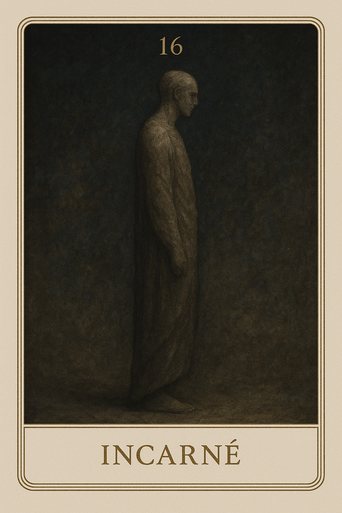
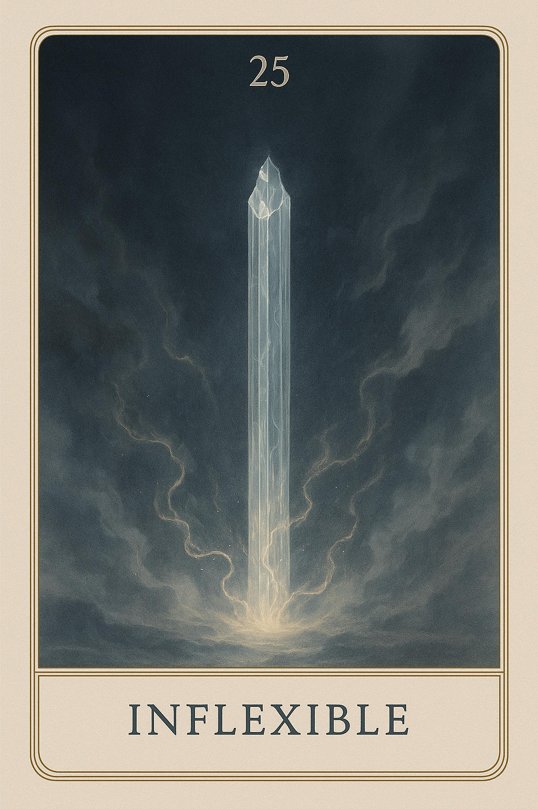
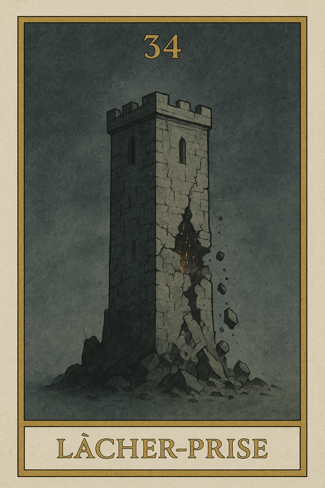
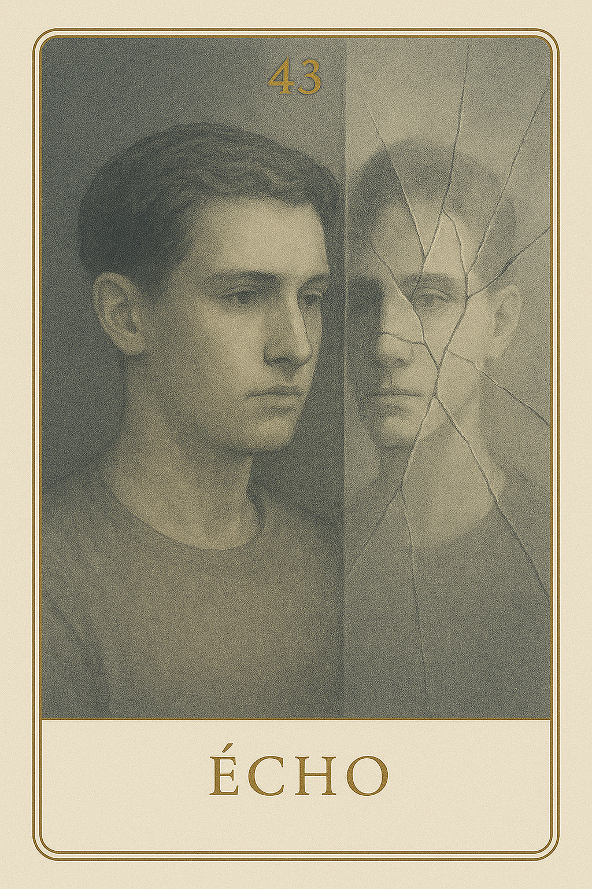
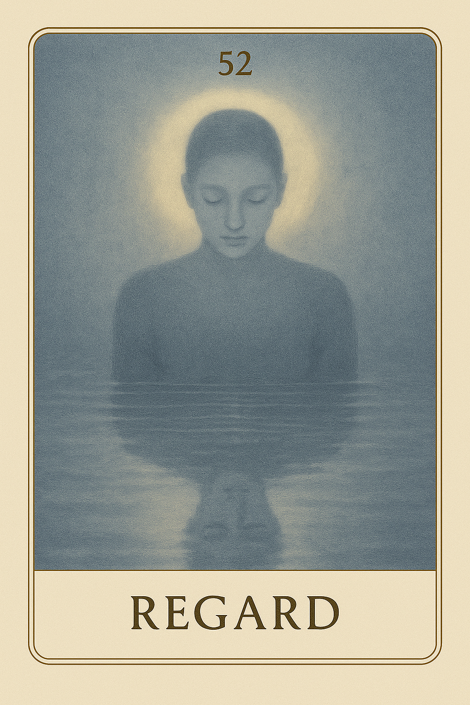
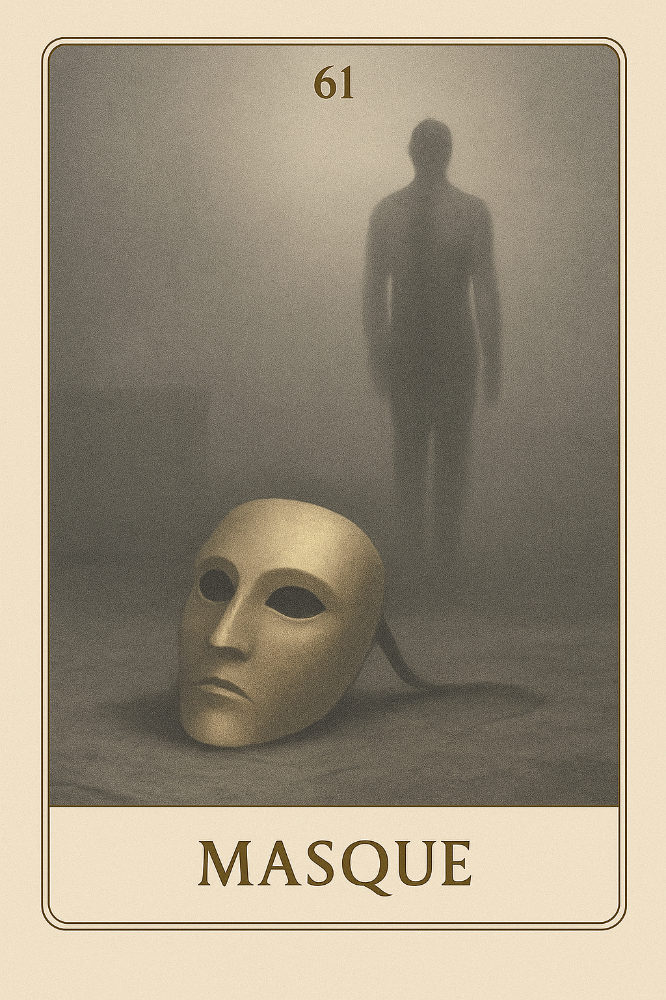
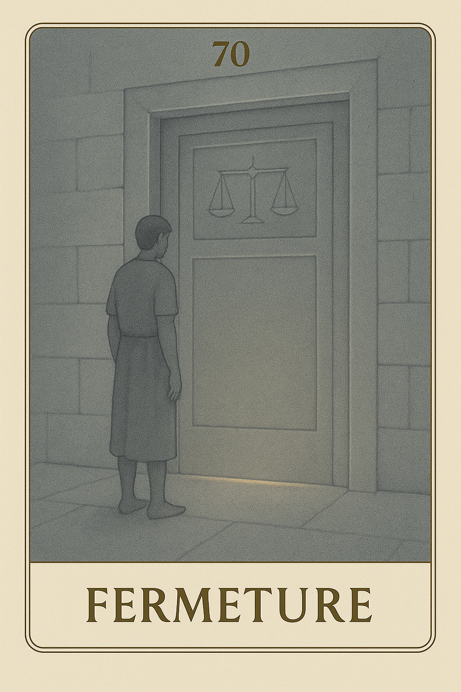
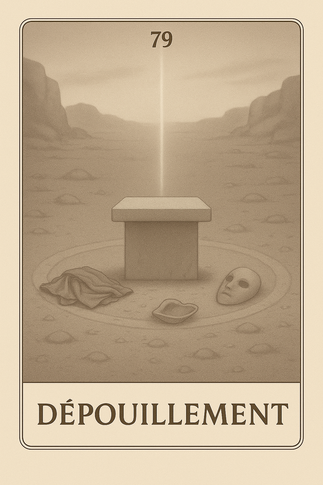

Famille 7 – Osiris (Saturne)
La Famille 7 du Seshat, guidée par Saturne et Osiris, t’invite à traverser les zones d’ombre, à te dépouiller de ce qui n’est plus aligné, et à renaître plus proche de toi-même. Ces cartes parlent de fin de cycle, de perte nécessaire, mais aussi de résilience et de transmutation profonde.
Carte 7 – Fissure

Mots-clés : rupture intérieure, transformation personnelle, début du changement, fissure émotionnelle
Chiffre caché : 214
Lecture inversée : 4 → 1 → 2
Divinité principale : Osiris
Planète secondaire : Soleil
Divinité secondaire : Râ
Interprétation de la carte 7 : Fissure (droite)
Lecture intuitive rapide
Une ligne invisible se dessine en toi. Elle ne casse rien encore, mais elle sépare. Ce n’est pas une chute, mais une pression trop longtemps contenue qui commence à fendre une image. La lumière ne passe pas encore, mais tu sens qu’elle cherche un passage. Tu n’es pas encore prêt à tout voir, mais tu ne peux plus tout cacher.
1. Caractère de la personne
Tu commences à sentir ce qui en toi est trop rigide. Tu vois les tensions intérieures non pas comme des erreurs, mais comme des signaux d’alerte. Une forme de toi ne suffit plus. La fissure ne détruit pas : elle ouvre.
2. Plan affectif
Tu reconnais une faille dans la façon dont tu te laisses toucher. Une douceur refusée, un amour caché, une peur d’être atteint. La relation commence quand tu ne peux plus faire semblant d’aller bien.
5. Plan spirituel
Ce n’est pas un effondrement. C’est l’éclat de lumière qui précède le passage. Ce que tu retiens encore cherche déjà à se libérer. Il ne s’agit pas d’y résister, mais d’écouter la ligne qui tremble.
Carte 7 : Fissure (inversée)
1. Caractère de la personne
Tu sens que quelque chose ne tient plus, mais tu t’obstines à maintenir une façade. La forme se déforme. Plus tu résistes, plus tu t’éloignes de toi-même.
2. Plan affectif
Tu refuses d’admettre que l’autre te touche là où tu es fragile. Tu veux contrôler le lien, l’émotion, la faille. Mais ce que tu caches crée déjà de la distance.
5. Plan spirituel
Tu crois pouvoir avancer sans rompre. Mais l’esprit réclame un passage clair. Si tu ne t’autorises pas à fissurer l’armure, la lumière n’entrera pas.
Résumé de la carte 7 : Fissure
Fissure est le commencement du retournement. Ce n’est pas une chute. C’est un appel. Un point de rupture lente entre ce que tu maintiens, et ce que tu es prêt à devenir.
Carte 16 – Incarné
Mots-clés : : confrontation à soi, prise de conscience corporelle, poids de l’histoire personnelle, lucidité intérieure, accueil de ce qui est
Chiffre caché : 232
Lecture inversée : 2 → 3 → 2
Planète secondaire : Terre
Divinité secondaire : Geb
Interprétation de la carte 16 : Incarné (droite)
Lecture intuitive rapide
Tu ne peux plus t’échapper. Ce que tu es a pris forme. Ce ne sont pas des pensées, ni des intentions : c’est toi, dans ta matière, dans ce que tu as produit, porté, habité. Il ne s’agit pas encore de comprendre ni de changer. Juste de ressentir ce que tu es devenu, sans fard, sans échappatoire.
1. Caractère de la personne
Ce que tu as été, ce que tu es devenu, vit maintenant dans ta forme, dans tes gestes, dans tes silences. Il n’y a rien à justifier : seulement à accueillir ce corps de toi-même.
2. Plan affectif
Tu ressens une pression sourde, un poids, un état. Ce n’est pas une punition, ni une faute. C’est ton être qui se manifeste dans la densité. Ce que tu portes n’est plus abstrait.
5. Plan spirituel
La clarté ne viendra pas du mental, mais de ton ressenti profond. Si tu restes avec ce qui est là, sans t’agiter, alors ce qui est incarné pourra être vu.
Carte 16 : Incarné (inversée)
1. Caractère de la personne
Tu refuses de voir ce que tu es devenu. Tu veux croire que rien n’a vraiment de conséquence. Mais la matière parle, et elle ne ment pas.
2. Plan affectif
Tu ressens une tension, mais tu l’attribues à autre chose. Pourtant, c’est le fruit de ce que tu portes depuis longtemps. C’est déjà en toi.
5. Plan spirituel
Tu cherches des explications à l’extérieur. Mais la seule réponse est dans ce que tu incarnes ici et maintenant. Regarde, sans fuir.
Résumé de la carte 16 : Incarné
Incarné est la carte de la réalité intérieure devenue matière. Ce n’est pas encore un jugement, ni une transformation : c’est ce que tu es, tel que tu l’as vécu, tel que tu le portes. Elle dit : “Ressens ce que tu es. Reste là. Tu ne peux pas changer ce que tu refuses de reconnaître.”
Carte 25 – Inflexible
Mots-clés : : rigidité intérieure, protection devenue contrôle, exigence relationnelle, fermeture émotionnelle, fidélité transformée en loi
Chiffre caché : 187
Lecture inversée : 7 → 8 → 1
Divinité principale : Osiris
Planète secondaire : Jupiter
Divinité secondaire : Amon-Rê
Interprétation de la carte 25 : Inflexible (droite)
Lecture intuitive rapide
Tu as traversé des épreuves. Tu t’es regardé en face. Tu sais ce que tu as vu. Mais ce savoir, cette rigueur que tu as forgée, est devenue mur. Tu tiens debout. Tu ne dévies plus. Mais tu as peut-être figé ta vérité en Loi. Tu ne plies pas — ni devant toi, ni devant les autres. Mais cette droiture peut devenir barrière, jugement, ou poids pour ceux qui t’entourent.
1. Caractère de la personne
Tu as tenu. Tu as traversé. Tu es debout. Mais ta force est devenue raideur. Tu veux être juste, mais tu ne fais plus de place à ce qui échappe à ta règle. Tu tranches, là où tu pourrais écouter.
2. Plan affectif
Tu ne veux plus souffrir. Tu te protèges derrière une loi que tu crois juste. Mais tu deviens sec, exigeant, difficile à atteindre. Tu confonds intégrité et fermeture.
5. Plan spirituel
Tu as reconnu ta vérité. Mais tu veux qu’elle vaille pour tous. Ta vision est haute, mais elle peut devenir sentencieuse. L’inflexibilité n’est pas la fidélité : elle est la peur de retomber.
Carte 25 : Inflexible (inversée)
1. Caractère de la personne
Tu as trop tenu. Tu ne t’autorises plus le doute. Tu ne t’adaptes plus. Et ce que tu appelles rigueur devient rejet, exclusion, solitude choisie par peur de la faiblesse.
2. Plan affectif
Tu refuses les nuances. Tu veux que l’autre soit clair, propre, digne. Mais c’est toi qui refuses de laisser l’inconfort entrer. Tu juges, alors que tu aurais pu simplement rester.
5. Plan spirituel
Tu as sacralisé une forme. Tu as nommé un chemin, et tu veux qu’il soit unique. Mais l’âme ne passe pas toujours par les règles. Elle demande une vérité vivante, pas figée.
Résumé de la carte 25 : Inflexible
Inflexible est la carte de la vérité rigidifiée. C’est une posture juste devenue fermeture, un jugement légitime devenu Loi. Elle dit : “Ta rigueur est noble. Mais si elle ne plie jamais, elle finit par trancher ce qu’elle voulait protéger.”
Carte 34 – Lâcher-Prise
Mots-clés : : fin du contrôle, tension intérieure, épuisement émotionnel, passage initiatique, abandon libérateur
Chiffre caché : 205
Lecture inversée : 5 → 0 → 2
Divinité principale : Osiris
Planète secondaire : Mars
Divinité secondaire : Sekhmet
Interprétation de la carte 34 : Lâcher-Prise (droite)
Lecture intuitive rapide
Tu résistes. Tu veux comprendre, maintenir, maîtriser. Tu refuses de tomber, de fléchir, de te laisser faire. Mais ce que tu crois être une force est une tension. Ce que tu crois être de la volonté est une peur qui ne veut pas dire son nom. Il faut laisser tomber. Pas par faiblesse, mais par vérité. Ce que tu tiens t’empêche d’ouvrir les bras.
1. Caractère de la personne
Tu sens que tu arrives au bout. Tu n’as plus l’énergie de lutter. Tu te rends, non pas par fatigue, mais parce que tu vois enfin que cette tension te tue. Tu desserres la mâchoire, les poings, le cœur.
2. Plan affectif
Tu voulais que ça marche, que ça tienne, que ça dure. Tu as tout porté, tout donné. Mais ce que tu retiens t’étouffe. L’amour n’a plus de place dans ce lien figé. Il est temps de poser le poids.
5. Plan spirituel
Tu laisses tomber ce que tu ne peux plus contrôler. Tu rends les armes. Tu ne sais pas ce qui vient après — mais tu acceptes que ce ne soit pas entre tes mains. Et dans ce vide, la paix commence.
Carte 34 : Lâcher-Prise (inversée)
1. Caractère de la personne
Tu tiens encore. Tu refuses de céder, de lâcher, de laisser faire. Mais ce que tu crois être ta force est en train de t’épuiser. Cette rigidité te coupe de toi.
2. Plan affectif
Tu restes dans un lien par volonté, par devoir, par peur de perdre. Mais rien ne circule plus. Tu contrôles au lieu d’aimer. Tu protèges ce qui n’a plus vie. Et tu t’enfermes avec.
5. Plan spirituel
Tu veux comprendre, maîtriser, garder la main. Mais ce passage demande une chute. Tant que tu résistes à la perte, tu refuses l’initiation. Ce n’est pas l’autre que tu retiens : c’est ta peur.
Résumé de la carte 34 : Lâcher-Prise
Lâcher-Prise est la carte du dépouillement volontaire. Elle n’appelle pas à la défaite, mais à la fin du contrôle inutile. Elle dit : “Ce que tu refuses de perdre te possède. Ce que tu refuses de lâcher t’empêche d’exister. Ose ne plus retenir.”
Carte 43 – Echo
Mots-clés : : responsabilité émotionnelle, résonance intérieure, miroir relationnel, reflet de soi, confrontation juste
Chiffre caché : 223
Lecture inversée : 3 → 2 → 2
Divinité principale : Osiris
Planète secondaire : Mercure
Divinité secondaire : Thot
Interprétation de la carte 43 : Echo (droite)
Lecture intuitive rapide
Tu as agi. Tu as dit. Tu as choisi. Et maintenant, cela revient. Ce n’est pas une punition — c’est un reflet. Ce que tu vois n’est pas un jugement : c’est la trace de ton propre pas. Tu peux détourner les yeux. Tu peux fuir. Mais l’écho ne s’arrête pas. Il attend que tu l’écoutes. Et que tu reconnaisses ce qu’il vient te rendre.
1. Caractère de la personne
Tu fais face à ce que tu as semé. Ce n’est pas une attaque : c’est un reflet. Ce que tu vois, c’est toi. Et tu peux t’en servir, ou t’en détourner.
2. Plan affectif
Tu entends ce que tu as fait résonner dans l’autre. Peut-être que tu ne voulais pas blesser. Mais l’écho est là. Et il te demande d’écouter pour vrai.
5. Plan spirituel
Tu es confronté à la résonance de tes actes. Tu ne peux pas évoluer sans reconnaître ta trace. Ce n’est pas une faute : c’est une empreinte.
Carte 43 : Echo (inversée)
1. Caractère de la personne
Tu refuses d’écouter ce qui te revient. Tu nies l’effet de ta parole, de ton choix. Mais l’écho ne se tait pas. Il attend que tu assumes.
2. Plan affectif
Tu fuis le miroir que l’autre te tend. Tu dis “ce n’est pas moi”, “je n’ai pas voulu”. Mais tu refuses surtout de voir ce que tu as provoqué.
5. Plan spirituel
Tu veux avancer sans regarder derrière. Mais l’écho de ton passé te retient. Ce n’est pas un obstacle : c’est une réponse. À toi d’y répondre.
Résumé de la carte 43 : Echo
Écho est la carte de la résonance lucide, celle qui renvoie ce que tu as posé dans le monde. Elle ne parle ni de faute, ni de punition — elle parle de réponse vibratoire. Elle dit : “Ce que tu entends aujourd’hui est l’écho de ce que tu as laissé hier. Tu peux le nier. Ou l’écouter. Et répondre pour vrai.”
Carte 52 – Regard
Mots-clés : : lucidité sur soi, acceptation intérieure, regard transformateur, intégration de l’ombre, dépouillement émotionnel
Chiffre caché : 196
Lecture inversée : 6 → 9 → 1
Divinité principale : Osiris
Planète secondaire : Vénus
Divinité secondaire : Hathor
Interprétation de la carte 52 : Regard (droite)
Lecture intuitive rapide
Tu veux te connaître. Mais veux-tu vraiment te voir ? Sans contourner. Sans embellir. Le regard que tu poses sur toi peut être un jugement… ou une délivrance. Ce que tu refuses de regarder reste en guerre contre toi. Mais ce que tu accueilles cesse de te blesser. Regarder en face, ce n’est pas se juger. C’est se reconnaître.
1. Caractère de la personne
Tu te regardes enfin sans fuir. Sans excuser. Et ce regard lucide n’est pas une condamnation : c’est un point d’appui.
2. Plan affectif
Tu cesses d’attendre d’être parfait pour t’aimer. Tu poses un regard doux sur tes contradictions. Et tu redeviens entier.
5. Plan spirituel
Tu entres dans la vérité nue. Non pour juger, mais pour t’aligner. Ce que tu vois maintenant, tu peux le transmuter.
Carte 52 : Regard (inversée)
1. Caractère de la personne
Tu évites ce qui te dérange en toi. Et cette fuite intérieure t’éloigne de ton axe. Tu n’as pas à être irréprochable. Juste à être vrai.
2. Plan affectif
Tu cherches l’amour, mais tu te regardes encore avec sévérité. Ce jugement crée une distance avec toi-même… et donc avec l’autre.
5. Plan spirituel
Tu veux la lumière, mais tu refuses encore de voir ton ombre. Or c’est dans le regard posé sur elle que commence l’intégration.
Résumé de la carte 52 : Regard
Regard est la carte de la lucidité douce. Elle ne te demande pas d’être parfait, mais d’oser te voir avec vérité. C’est le regard posé sans défense qui ouvre la voie du dépouillement serein. Elle dit : “Tu ne peux pas te transformer si tu refuses de te regarder. Mais ce que tu regardes sans peur… cesse de te gouverner.”
Carte 61 – Masque
Mots-clés : : perte de repères, fin d’un rôle intérieur, dévoilement de soi, chute des apparences, passage identitaire
Chiffre caché : 178
Lecture inversée : 8 → 7 → 1
Divinité principale : Osiris
Planète secondaire : Saturne
Divinité secondaire : Osiris
Interprétation de la carte 61 : Masque (droite)
Lecture intuitive rapide
Tu l’as porté longtemps. Ce rôle, cette image, cette manière d’être. Tu y as cru, parfois. Tu t’y es réfugié. Mais le temps du jeu est terminé. Le masque glisse. Il tombe. Et ce n’est pas l’autre qui te voit tomber. C’est toi. Ce que tu croyais être “toi” n’est peut-être qu’un contour. Et ce qui reste… c’est la question.
1. Caractère de la personne
Tu as construit un personnage. Peut-être pour survivre, pour appartenir. Mais aujourd’hui, tu sais que ce n’est plus toi. Et le masque ne tient plus. Il te colle à la peau, mais ne te protège plus.
2. Plan affectif
Tu veux être aimé, mais pas à travers un rôle. Et pourtant tu continues de jouer. Peut-être que le lien ne s’est jamais noué… avec ce que tu es vraiment.
5. Plan spirituel
Le dépouillement commence ici. Pas dans les grandes révélations, mais dans la chute des images. Tu ne peux pas avancer sans tomber le masque — surtout devant toi-même.
Carte 61 : Masque (inversée)
1. Caractère de la personne
Tu t’accroches encore à l’image. À ce que tu crois devoir être. Mais ce rôle est une prison. Il te fige. Il t’éloigne. Et ce que tu caches… finit par t’effacer.
2. Plan affectif
Tu veux être reconnu, mais tu n’oses pas te montrer. Alors tu crées le lien avec une version de toi… qui n’existe plus. Et tu te sens seul, même dans la relation.
5. Plan spirituel
Tu crois que tu peux évoluer sans perdre tes anciens repères. Mais c’est faux. Il faut tomber le masque, même si tu ne sais pas encore qui tu es dessous. C’est là que commence la vraie foi.
Résumé de la carte 61 : Masque
Masque est la carte du moment où l’image se défait. Tu n’es pas encore ce que tu deviendras. Mais tu n’es plus ce que tu prétendais être. C’est un passage austère, solitaire, mais vrai. Elle dit : “Tu ne peux pas aimer ou grandir depuis un rôle. Il faut laisser tomber ce que tu montres — pour retrouver ce que tu es.”
Carte 70 – Fermeture
Mots-clés : : seuil intérieur, retenue émotionnelle, limite initiatique, résistance symbolique, passage différé
Chiffre caché : 241
Lecture inversée : 1 → 4 → 2
Divinité principale : Osiris
Planète secondaire : Uranus
Divinité secondaire : Maât
Interprétation de la carte 70 : Fermeture (droite)
Lecture intuitive rapide
Tu veux franchir. Tu sens que c’est là, juste là. Mais quelque chose bloque. Ce n’est pas un refus, ni une punition. C’est une limite vivante, posée là non pour t’empêcher — mais pour te questionner. Es-tu prêt à passer sans masque ? Sans défense ? Sans fuite ? La limite n’est pas un mur extérieur. C’est un point précis en toi… que tu n’as pas encore osé traverser.
1. Caractère de la personne
Tu rencontres un point de tension. Pas une crise — une friction juste entre ce que tu veux être et ce que tu n’as pas encore regardé en face.
2. Plan affectif
Tu veux entrer en lien, mais tu n’oses pas aller plus loin. Tu sens la peur. Tu sens la retenue. Ce n’est pas l’autre qui bloque. C’est la limite que tu t’imposes.
5. Plan spirituel
La limite est une gardienne. Elle ne t’empêche pas : elle te prépare. Si tu la respectes, elle s’ouvre. Si tu la forces, elle devient résistance.
Carte 70 : Fermeture (inversée)
1. Caractère de la personne
Tu insistes. Tu veux dépasser, aller plus loin. Mais tu n’écoutes pas la vérité de ton état intérieur. Et plus tu forces, plus la limite se fait dure.
2. Plan affectif
Tu veux forcer le lien. Mais ce que tu prends pour de la distance… c’est peut-être une protection. Respecte-la. Tu n’as pas encore passé cette étape en toi.
5. Plan spirituel
Tu confonds persévérance et entêtement. Mais cette limite n’est pas là pour te faire chuter. Elle t’indique que le dépouillement n’est pas terminé.
Résumé de la carte 70 : Fermeture
Limite est la carte du seuil intérieur qu’on ne peut franchir sans vérité. Elle t’invite à regarder ce point précis en toi qui n’est pas encore prêt. Pas pour t’arrêter — mais pour t’ajuster. Elle dit : “Ce n’est pas un échec. C’est une vérité qui t’attend. La limite, c’est l’endroit exact où tu peux commencer à devenir.”
Carte 79 – Dépouillement
Mots-clés : : mise à nu intérieure, vérité essentielle, traversée radicale, fin des illusions, renaissance sobre
Chiffre caché : 169
Lecture inversée : 9 → 6 → 1
Divinité principale : Osiris
Planète secondaire : Planète inconnue
Divinité secondaire : Sia
Interprétation de la carte 79 : Dépouillement (droite)
Lecture intuitive rapide
Tu es arrivé au seuil. Tu n’as plus rien à défendre. Plus d’argument, plus d’image, plus d’histoire. Tu es nu devant toi-même. Et c’est là que le vrai jugement commence — non par condamnation, mais par lucidité radicale. Tout ce que tu as été, dit, fait… se tient là, sans filtre, sans justification. Et dans ce moment, ce n’est pas ce que tu as réussi qui compte, mais ce que tu as traversé avec intégrité. Le reste tombe. Et ce qui reste… Te construit
1. Caractère de la personne
Tu fais face à toi. Tu ne peux plus raconter, détourner, embellir. Ce que tu es apparaît sans voile — et c’est là que commence ta véritable force.
2. Plan affectif
Tu ne cherches plus à être aimé, compris, validé. Tu regardes ton cœur tel qu’il a été — sans plainte, sans orgueil. Et tu laisses tomber ce qui ne t’honore plus.
5. Plan spirituel
Tu es dans le creux du passage. Ce n’est pas une chute : c’est le moment où tout ce qui est faux te quitte. C’est là que commence ta lumière nue.
Carte 79 : Dépouillement (inversée)
1. Caractère de la personne
Tu refuses encore de voir. Tu te caches derrière le faire, le paraître, les justifications. Mais ce que tu évites t’attend au centre.
2. Plan affectif
Tu veux qu’on t’aime… mais tu n’es pas encore revenu à ton cœur réel. Le lien juste ne peut naître que quand tu ne te trahis plus.
5. Plan spirituel
Tu crois avancer. Mais tu portes encore des couches mortes. Ce n’est pas dans l’ajout que tu vas renaître. C’est dans le retrait du superflu.
Résumé de la carte 79 : Dépouillement
Dépouillement est la carte du jugement intime, de la chute de tout ce qui n’est pas essentiel, de la vérité qui ne demande plus à être dite, mais vue. Ce n’est pas une punition. C’est un passage nécessaire, une mise à nu féconde, où tu cesses de vouloir être, pour redevenir vrai. Elle dit : “Tu ne perds rien. Tu rends ce qui ne t’appartient plus. Et ce qui reste… est toi.”